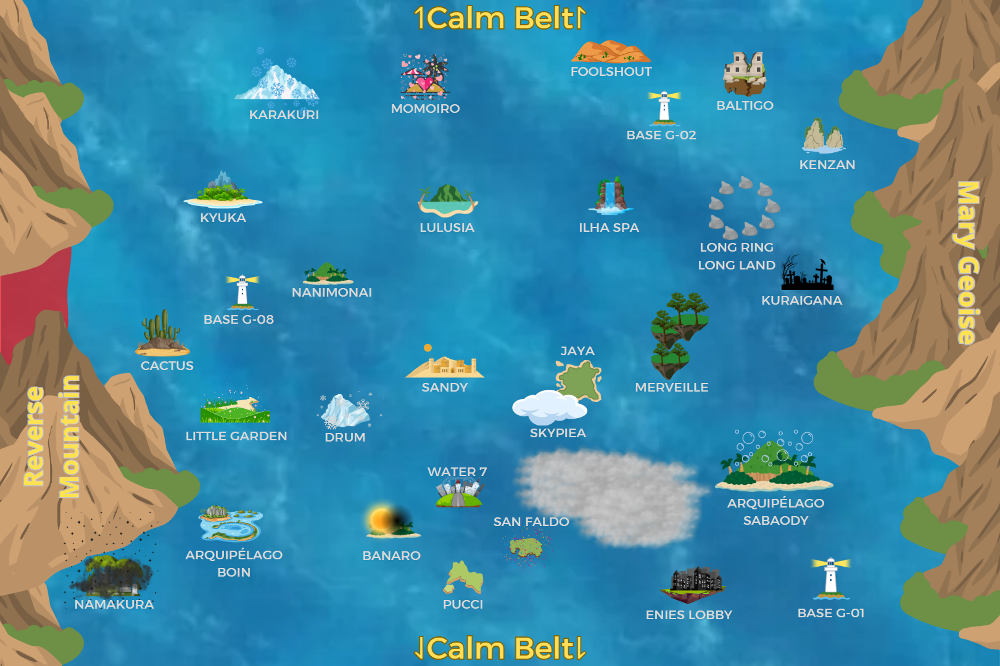

PARAÍSO

Baltigo
Afiliação: Independente
Conhecida como a "Terra da Argila Branca", Baltigo é uma ilha envolta por ventanias constantes e paisagens áridas, com colinas cobertas por uma poeira esbranquiçada. Sua localização é de difícil acesso, tornando-a um refúgio para eremitas e estudiosos que buscam isolamento.
Banaro
Afiliação: Independente
Uma ilha coberta por vastas plantações e bosques de árvores frutíferas. O solo fértil e o clima ameno fazem dela um local ideal para a agricultura. Apesar de sua tranquilidade, antigas ruínas de um povoado desaparecido indicam que a ilha já teve uma história turbulenta.
Base da Marinha G-02
Afiliação: Governo Mundial/Marinha
Uma fortaleza marítima posicionada na entrada da Grand Line. Seu propósito é controlar o fluxo de embarcações que entram e saem da rota, funcionando como um posto avançado da Marinha na região.
Base da Marinha G-08
Afiliação: Governo Mundial/Marinha
Uma base móvel da Marinha construída sobre uma frota de navios interligados. Sua posição varia conforme a necessidade estratégica, tornando-a uma força de resposta rápida contra ameaças emergentes.
Boin
Afiliação: Vanguarda Popular Revolucionária
O Arquipélago Boin consiste em um conjunto de ilhas de formato peculiar, lembrando pétalas de flores. Sua flora e fauna são exuberantes, mas perigosas: insetos gigantes e plantas carnívoras dominam o ecossistema, tornando a sobrevivência um desafio constante.
Cactus
Afiliação: Independente
Uma ilha rochosa repleta de colinas pontiagudas que se assemelham a cactos. Os "espinhos" que cobrem suas formações naturais, no entanto, são na verdade lápides de um antigo cemitério, indicando que batalhas sangrentas ocorreram ali no passado.
Corrente Tarai
Afiliação: Governo Mundial/Marinha
A Corrente Tarai é uma poderosa corrente marítima "controlada" pelo Governo Mundial, conectando diretamente três de suas fortalezas mais imponentes: Enies Lobby, Impel Down e a Sede da Marinha. Essa via exclusiva de transporte é estrategicamente projetada para facilitar o deslocamento rápido entre essas bases, ao mesmo tempo em que impede a navegação de embarcações não autorizadas. Devido à sua localização e às águas turbulentas que a compõem, é praticamente impossível acessá-la ou escapar dela sem a permissão do Governo. A Corrente Tarai desempenha um papel crucial na segurança dessas instalações, tornando qualquer invasão ou fuga uma tarefa extremamente desafiadora.
Base da Marinha G-01
Afiliação: Governo Mundial/Marinha
Marineford é a base de operações do Quartel-General da Marinha, onde os almirantes e altos oficiais residem. Sua posição estratégica próxima à Red Line faz dela uma das fortalezas mais bem protegidas do mundo.
Enies Lobby
Afiliação: Governo Mundial/Marinha
Também chamada de "Ilha Judiciária", Enies Lobby serve como um centro administrativo para julgamentos ligados ao Governo Mundial. Cercada por correntes marítimas violentas, seu acesso é restrito, sendo usada para o transporte de prisioneiros.
Drum
Afiliação: Independente
Uma ilha de inverno conhecida por suas montanhas nevadas e o frio intenso que domina a paisagem. Pequenos vilarejos espalhados por suas encostas sobrevivem graças à caça e ao cultivo de ervas medicinais raras.
Foolshout
Afiliação: Pirata
Uma ilha marcada por penhascos e uma cidade portuária decadente. O local se tornou refúgio para foras da lei, com tavernas e docas onde se negociam bens ilegais. A ilha está sob o controle de um poderoso capitão pirata e de sua tripulação, conhecidos por dominar a região à força.
Ilha Spa
Afiliação: Independente
Um paraíso de águas termais e resorts, repleto de escorregadores naturais, fontes aquecidas e restaurantes sofisticados. Sua fama atrai visitantes de toda a Grand Line em busca de descanso e lazer.
Jaya
Afiliação: Governo Mundial/Marinha
Uma ilha de primavera com vegetação densa e florestas tropicais. Sua geografia montanhosa esconde vestígios de civilizações antigas, mas a maior parte de sua história permanece desconhecida.
Skypiea
Afiliação: Independente
Uma ilha flutuante sobre o Mar Branco-Branco. Os habitantes locais veneram uma entidade divina e vivem em estruturas suspensas. A identidade do líder supremo de Skypiea é Odin Tenshi.
Karakuri
Afiliação: Pirata
Uma ilha de inverno conhecida por suas máquinas complexas e autômatos. Sua principal cidade, Baldimore, abriga artesãos e inventores que exploram a engenharia avançada. Atualmente, a ilha está sob o controle de um alto representante de um grande Imperador do Mar.
Kenzan
Afiliação: Independente
O Reino Tehna Gehna se ergue sobre a ilha Kenzan, famosa por sua arquitetura peculiar e habitantes que dominam técnicas de combate corpo a corpo.
Kuraigana
Afiliação: Pirata
Uma ilha sombria, coberta por ruínas de um reino esquecido. Criaturas misteriosas espreitam entre os escombros, e poucos aventureiros ousam permanecer por muito tempo. A ilha está sob o controle de um temido Imperador do Mar.
Kyuka
Afiliação: Independente
Uma ilha de clima ameno e forte economia pesqueira, antes marcada por pequenos vilarejos costeiros e festivais sazonais.
Little Garden
Afiliação: Desabitada
Uma ilha isolada, onde a vida selvagem permaneceu intocada por séculos. Dinossauros e outros seres pré-históricos habitam a região, tornando-a um verdadeiro desafio para exploradores.
Long Ring Long Land
Afiliação: Independente
Uma ilha peculiar que se estende em anéis de terra interligados. De tempos em tempos, o recuo das marés revela novas passagens e altera o formato da ilha.
Reino Lulusia
Afiliação: Governo Mundial/Marinha
O Reino Lulusia é um lugar de clima ameno, com colinas suaves, campos férteis e cidades bem cuidadas de aparência clássica. O povo é educado e contido, acostumado a seguir regras e respeitar autoridades, mas há uma tensão silenciosa sob a aparência ordeira, como se muitos sorrisos fossem forçados. A vida é tranquila para quem se encaixa, mas rígida para quem pensa diferente.
Mar do Triângulo Florian
Afiliação: Governo Mundial/Marinha
Uma região coberta por uma névoa densa, conhecida por engolir embarcações inteiras. Muitos marinheiros evitam essa rota, temendo as lendas sobre fantasmas e monstros marinhos. Toda navegação passando por esse local deve ser narrada por um ADM.
Mary Geoise
Afiliação: Governo Mundial/Marinha
O coração do Governo Mundial, onde os governantes mais influentes residem. O local é cercado por muralhas imponentes e protegido por exércitos de elite.
Merveille
Afiliação: Independente
Uma ilha selvagem cercada por ilhotas menores. A flora da região contém uma substância única chamada QI, responsável por acelerar a evolução de algumas criaturas locais.
Momoiro
Afiliação: Independente
A ilha onde se localiza o Reino de Kamabakka, lar de indivíduos que seguem uma cultura própria baseada na beleza e na graça.
Namakura
Afiliação: Pirata
Uma ilha devastada pela pobreza, onde seus habitantes vivem em condições precárias. A "Terra da Pobreza" já foi um reino próspero, mas guerras e saques reduziram seu povoado a meras sombras do passado. Atualmente, a ilha está sob o controle de um senhor da guerra pirata.
Nanimonai
Afiliação: Desabitada
Uma ilha desabitada antes de Alabasta. Suas terras áridas e ausência de recursos fazem dela um local de passagem, raramente visitado por navegantes.
Pucci
Afiliação: Governo Mundial/Marinha
Famosa por sua culinária requintada, é chamada de "A Cidade Gourmet" devido à sua grande concentração de chefs renomados.
Sabaody
Afiliação: Governo Mundial/Marinha
Um arquipélago formado por gigantescas árvores de mangue. Sua proximidade com a Red Line faz dela um ponto de parada obrigatório para navegantes em busca de novas rotas.
Ilha dos Homens-Peixe
Afiliação: Pirata
Uma cidade subaquática habitada por homens-peixe e sereianos. Sua localização serve como ponto de travessia entre os mares, mas muitos humanos têm dificuldade para obter passagem segura. Esta ilha está sob o controle do grande Imperador do Mar David The Statue.
San Faldo
Afiliação: Independente
Uma cidade movimentada, famosa por seus festivais exuberantes e carnaval interminável.
Sandy
Afiliação: Pirata
A ilha onde se encontra o Reino de Alabasta, uma das maiores civilizações da Grand Line. Seu deserto escaldante esconde oásis e segredos antigos. Atualmente, a ilha pertence a poderosos Imperadores do Mar que disputam influência sobre a região.
Water 7
Afiliação: Governo Mundial/Marinha
Uma cidade conhecida por seus construtores navais, responsáveis por embarcações de qualidade excepcional. Seu sistema de canais a torna uma metrópole única na Grand Line.